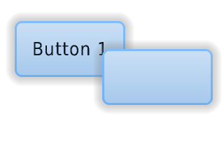

.. include:: /header.rst
:github_url: |github_link_base|/overview/layer.md
Layers
Order of creation
By default, LVGL draws new objects on top of old objects.
For example, assume we add a button to a parent object named button1 and then another button named button2. Then button1 (along with its child object(s)) will be in the background and can be covered by button2 and its children.

/*Create a screen*/
lv_obj_t * scr = lv_obj_create(NULL, NULL);
lv_scr_load(scr); /*Load the screen*/
/*Create 2 buttons*/
lv_obj_t * btn1 = lv_btn_create(scr, NULL); /*Create a button on the screen*/
lv_btn_set_fit(btn1, true, true); /*Enable automatically setting the size according to content*/
lv_obj_set_pos(btn1, 60, 40); /*Set the position of the button*/
lv_obj_t * btn2 = lv_btn_create(scr, btn1); /*Copy the first button*/
lv_obj_set_pos(btn2, 180, 80); /*Set the position of the button*/
/*Add labels to the buttons*/
lv_obj_t * label1 = lv_label_create(btn1, NULL); /*Create a label on the first button*/
lv_label_set_text(label1, "Button 1"); /*Set the text of the label*/
lv_obj_t * label2 = lv_label_create(btn2, NULL); /*Create a label on the second button*/
lv_label_set_text(label2, "Button 2"); /*Set the text of the label*/
/*Delete the second label*/
lv_obj_del(label2);
Bring to the foreground
There are four explicit ways to bring an object to the foreground:
Use
lv_obj_move_foreground(obj)to bring an object to the foreground. Similarly, uselv_obj_move_background(obj)to move it to the background.Use
lv_obj_move_up(obj)to move an object one position up in the hierarchy, Similarly, uselv_obj_move_down(obj)to move an object one position down in the hierarchy.Use
lv_obj_swap(obj1, obj2)to swap the relative layer position of two objects.When
lv_obj_set_parent(obj, new_parent)is used,objwill be on the foreground of thenew_parent.
Top and sys layers
LVGL uses two special layers named layer_top and layer_sys.
Both are visible and common on all screens of a display. They are not, however, shared among multiple physical displays. The layer_top is always on top of the default screen (lv_scr_act()), and layer_sys is on top of layer_top.
The layer_top can be used by the user to create some content visible everywhere. For example, a menu bar, a pop-up, etc. If the click attribute is enabled, then layer_top will absorb all user clicks and acts as a modal.
lv_obj_add_flag(lv_layer_top(), LV_OBJ_FLAG_CLICKABLE);
The layer_sys is also used for similar purposes in LVGL. For example, it places the mouse cursor above all layers to be sure it's always visible.